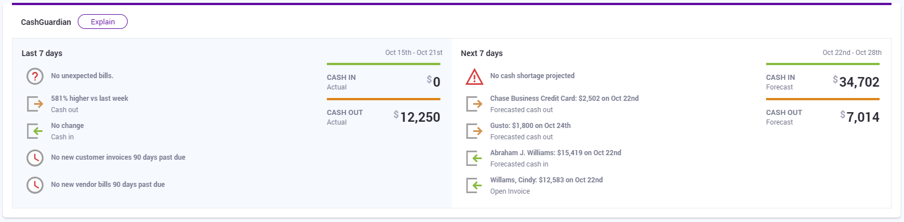

CashFlowTool Summary Page
Background
The challenge
CashFlowTool is a cash flow management service aiming to help small business owners and accountants manage the cash flow of a business. The software offers various powerful features that analyze financial data to efficiently present current cash metrics, transactions, KPIs and forecast future cash activities.
When I joined the CashFlowTool team at Finagraph, the team was in the midst of developing a new key component of CashFlowTool called the Summary page. By adding this new component to CashFlowTool, the team aimed to provide users with a quick and easy way to take a glance at their businesses' financial health.
My role
Joining Finagraph's lead UX designer in September 2019, I led the design aspect of the Summary screen project, working alongside a product manager, our Sales VP, and a front-end developer. During the design process, we also got consultation from other stakeholders including our Director of Engineering, CFO, and CEO.
The CashFlowTool Summary page feature launched on October 14, 2019.
Process
Discovery & Research
The idea of a summary screen first got inspired by CashFlowTool users’ frequently busy schedules as business owners and accountants. From our communications and interviews with customers, we learned that a majority of our users had to handle multiple types of tasks daily and were looking for an efficient way to quickly figure out whether their businesses were doing well in terms of cash flow.
This discovery prompted us to build a tool which offers a quick at-a-glance overview of a business's cash flow during the near past and future. We saw an opportunity in this tool to help business owners and accountants:
Quickly track the financial health of a business without having to check financial data daily
Make well-informed decisions based on reported cash activities
Avoid costly surprises
Ideation & Execution
Through brainstorming sessions, I generated ideas and whiteboarded rapid sketches with a product manager and our Sales VP. We arrived at the decision to include a condensed version of our existing cash flow chart and a notification system in the screen.
The notification system is central to the screen's functionality, as it offers a tool that analyzes a business's cash flow data to sort out the most important information and alert business owner or accountant. This concept was later developed to become a service called CashGuardian™. The main challenge of the Summary screen project was to design this system.
With the design assets from the existing CashFlowTool product, I was able to start creating wireframes at high fidelity. The team met daily and occasionally consulted with stakeholders across divisions to discuss design iterations. Thanks to these meetings, we were able to gather feedback and continuously refine the wireframes, which gradually transformed into more polished mockups.
Notably, several conversations surrounded the communicativeness of the notifications, which include icons and text conveying activities, metrics, and alerts related to a business’s cash flow. These components bear crucial information to a business, yet have to be as intuitive and simple as possible. Therefore, we dedicated lots of consideration and experimenting to craft the best solution.
Eventually, we settled on a final design, which was presented to stakeholders one last time for approval before getting handed over to development.
Implementation, Outcome & More Iterations
During the development process, I worked closely with our lead front-end developer to make sure the design was properly implemented. We made sure to transfer all elements of the design such as colors, typography, and iconography as accurately as possible.
After the screen got released into production, the team was happy to witness a positive reaction from our user base. The Summary screen offers a quick overview-at-a-glance of business for the last 7 days and the next 7 days. With the help from CashGuardian™, the new screen provides a tool that automatically sift through all cash flow data and reports what matters most to a business.
The final CashGuardian™ interface design features a structured, visually pleasing and intuitive system with iconographic and textual elements that clearly display data and indicate various types of notifications. At a glance, a user can easily detect important cash flow information from the last 7days and in the next 7 days, including the amount of cash in, cash out, notable invoices, bills, and so on. This way, one can be assured of a business's cash flow situation or take needed actions accordingly.
The Weekly Cash Flow Chart on the Summary screen is a condensed version of our original Cash Flow Chart, with an additional interaction that allows the viewing of each week's details. This chart shows the last 12 weeks of actual data and the next 4 weeks of forecasted transactions. At a glance, a user can see how the cash balance, cash-in and cash-out amounts are trending over time. By clicking each week in the chart, one can drill down and see additional details for that specific week.

We didn’t forget to gather feedback on the new features by reaching out to customers and watching user session recordings. This way, we were able to observe users’ understanding and adoption of the new Summary screen. These efforts helped us identify technical bugs and design flaws affecting the new features’ user experience. From these discoveries, we timely devised solutions to fix the problems.
Takeaways
This was my first project at Finagraph, which gave me an amazing jumpstart as part of the CashFlowTool team. Overall, this was a fulfilling project to me, not only because it provides a powerful financial tool that helps small businesses thrive, but also because it taught me a lot on achieving an efficient workflow, the importance of iterations, and effective visual communication. Moving forward, the team will keep looking for ways to improve the Summary screen and the CashFlowTool application as a whole to bring an even better experience to our users.